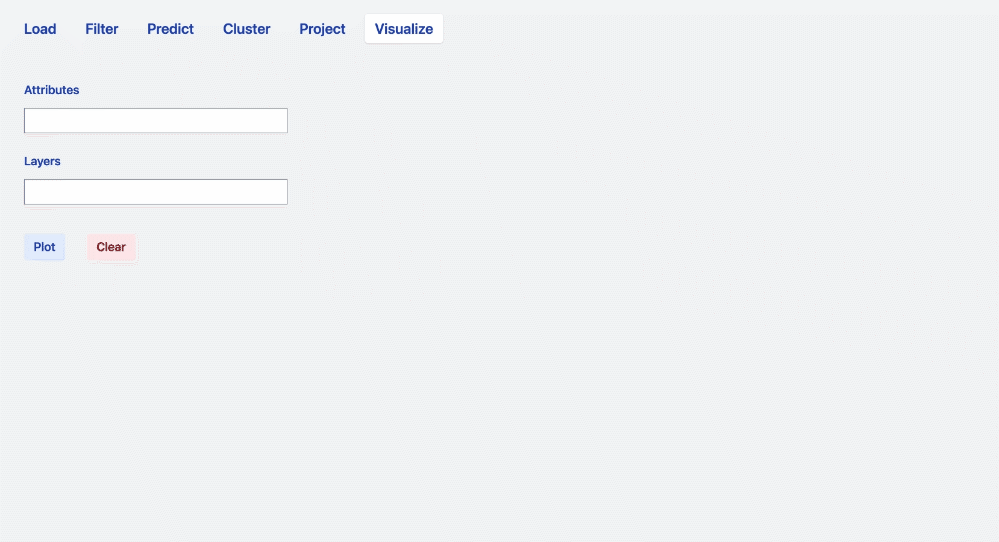
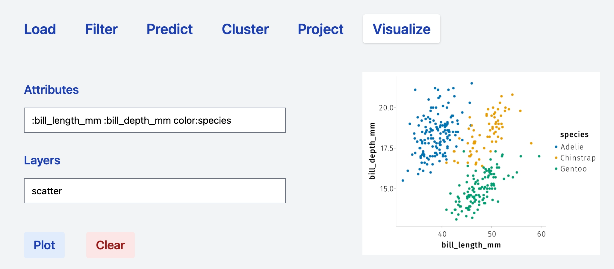

Visualize
The visualize tab provides all the machinery for
performing preliminary data exploration;
visualizing the output of the computational tabs (prediction, clustering, dimensionality reduction).
Fields
The tab consists of two main fields: Attributes and Layers. The way simple analyses are performed and rendered follows the philosophy of AlgebraOfGraphics.jl.
- Attributes. The attributes field contains the variable to be plotted and additional attributes that will be applied globally to the plot to be rendered. For instance, the syntax
:column_1 :column2implies that the two selected columns will be used asxandyaxis of any plot that will be produced from such attributes. Adding more attributes such as:column_1 :column2 color:column_3means that thecolumn_3(being continuous or categorical) will be used to establish the color code associated with rendered plot. See examples in the following sections. - Layers. The layer field can be filled with one or more operations that will take the content of the Attributes filed as input (and specifications) and result in a series of superposed plots. For instance the syntax:
Attributes:column_1 :column2 color:column_3 Layers: scatterproduces a scatter plot havingcolumn_1andcolumn_2asxandyaxis, respectively, and whose points are colored according tocolumn_3. The+operator can be used to combine layers. Thus, the syntaxAttributes:column_1 :column2 color:column_3 Layers: scatter + linearrenders a scatter plot and a plots linear models according to the grouping defined bycolumn_3. Specifications relative to a specific operations can be added directly in theLayersfield. See the sections below for specific examples.
In the following sections, we will use the palmerpenguins dataset to describe the most common computational steps in data exploration.
Layers
Frequency

Dodge
Stack
Scatter
Color

Marker

Linear
Density

Contour

Combine layers


Split by categorical variable